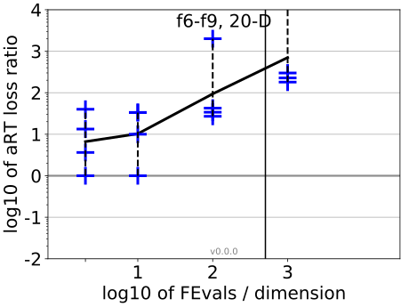
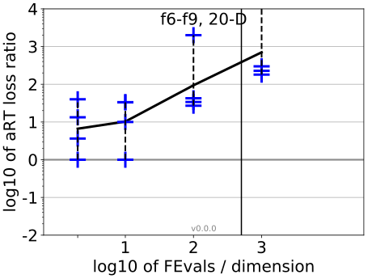

All functions in 5-D and 20-D
f1–f24 in 5-D, maxFE/D=2020
| #FEs/D | best | 10 % | 25 % | med | 75 % | 90 % |
|---|---|---|---|---|---|---|
| RLUS/D | 2e3 | 2e3 | 2e3 | 2e3 | 2e3 | 2e3 |
| 2 | 0.44 | 1.00 | 1.1 | 1.8 | 3.3 | 3.5 |
| 10 | 1.0 | 3.1 | 3.3 | 4.5 | 5.9 | 14 |
| 100 | 7.0 | 8.8 | 14 | 21 | 30 | 88 |
| 1e3 | 17 | 26 | 37 | 75 | 1.2e2 | 2.5e2 |
| 1e4 | 17 | 49 | 1.0e2 | 2.7e2 | 6.0e2 | 1.2e3 |
f1–f24 in 20-D, maxFE/D=505
| #FEs/D | best | 10 % | 25 % | med | 75 % | 90 % |
|---|---|---|---|---|---|---|
| RLUS/D | 5e2 | 5e2 | 5e2 | 5e2 | 5e2 | 5e2 |
| 2 | 1.0 | 1.0 | 3.8 | 13 | 40 | 40 |
| 10 | 1.0 | 1.0 | 6.5 | 29 | 1.3e2 | 2.0e2 |
| 100 | 1.0 | 26 | 43 | 58 | 87 | 2.0e3 |
| 1e3 | 1.0 | 65 | 1.5e2 | 2.3e2 | 3.0e2 | 4.9e2 |
Separable functions in 5-D and 20-D
Misc. moderate functions in 5-D and 20-D
Ill-conditioned functions in 5-D and 20-D
Multi-modal functions in 5-D and 20-D
Weak structure functions in 5-D and 20-D
aRT loss ratios (see the previous figure for details). Each cross (+) represents a single function, the line is the geometric mean.

{kind=link}
{kind=link}
{kind=link}
{kind=link}
{kind=link}
{kind=link}
{kind=link}
{kind=link}
{kind=link}